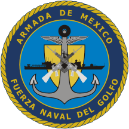
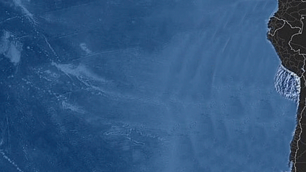
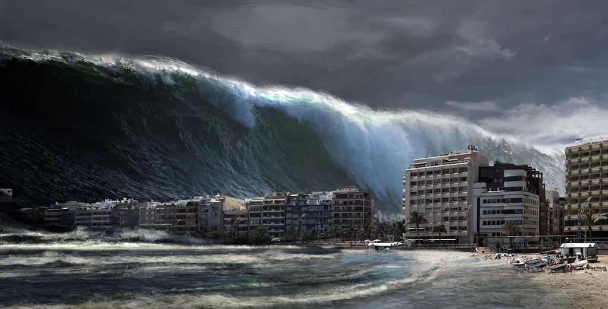

¿QUÉ ES UN TSUNAMI?
Un tsunami es un evento complejo que involucra un grupo de olas de gran energía y de tamaño variable que se producen cuando algún fenómeno extraordinario desplaza verticalmente una gran masa de agua. Este tipo de olas remueven una cantidad de agua muy superior a las olas superficiales producidas por el viento. Se calcula que el 90% de estos fenómenos son provocados por terremotos.
Un tsunami es un evento complejo que involucra un grupo de olas de gran energía y de tamaño variable que se producen cuando algún fenómeno extraordinario desplaza verticalmente una gran masa de agua. Este tipo de olas remueven una cantidad de agua muy superior a las olas superficiales producidas por el viento. Se calcula que el 90% de estos fenómenos son provocados por terremotos.

En México, la marina se encarga de alertar y evacuar a la población ante la detección de este fenómeno.

Expanción de las olas después del sismo de Chile 2010. Estas olas eventualmente llegaron a la costa de Japón.
¿CÓMO SE GENERA UN TSUNAMI?
Cuando el epicentro de un sismo es en la costa o cerca de ella, éste puede generar energía suficiente para que empiece la expansión de olas que eventualmente puedan llegar a otra costa, convirtiendose así en un tsunami.
Con la explicación anterior, quedará más claro que, al contrario de la creencia común, un tsunami no es una sóla ola, sino una secuencia de olas.
Cuando el epicentro de un sismo es en la costa o cerca de ella, éste puede generar energía suficiente para que empiece la expansión de olas que eventualmente puedan llegar a otra costa, convirtiendose así en un tsunami.
Con la explicación anterior, quedará más claro que, al contrario de la creencia común, un tsunami no es una sóla ola, sino una secuencia de olas.
FRECUENCIA DE TSUNAMIS EN MÉXICO
Como la mayoría de las veces un tsunami es generado por un sismo, siempre hay que estar alerta a cualquier sismo que pase en el otro lado del océano, llamese Atlántico o Pacífico. Como muchos de los sismos tienen como epicentro un lugar en América o cercano, no es tan frecuente que ocurra un sismo con la capacidad de generar un tsunami que llegue a México. El último registro de un tsunami en México fué en el año 1787 generado por un sismo de 8.6
Como la mayoría de las veces un tsunami es generado por un sismo, siempre hay que estar alerta a cualquier sismo que pase en el otro lado del océano, llamese Atlántico o Pacífico. Como muchos de los sismos tienen como epicentro un lugar en América o cercano, no es tan frecuente que ocurra un sismo con la capacidad de generar un tsunami que llegue a México. El último registro de un tsunami en México fué en el año 1787 generado por un sismo de 8.6

Escuela Nacional de Estudios Superiores
Unidad Morelia
Antigua Carretera a Pátzcuaro No. 8701
Col. Ex Hacienda de San José de la Huerta
C.P. 58190 Morelia, Michoacán, México
Teléfonos:
Desde Morelia (443) 6-89-35-00